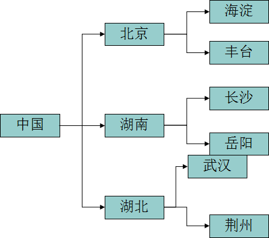
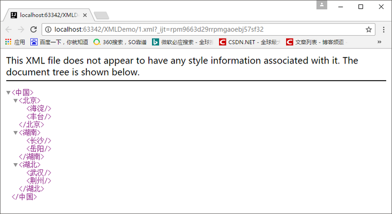
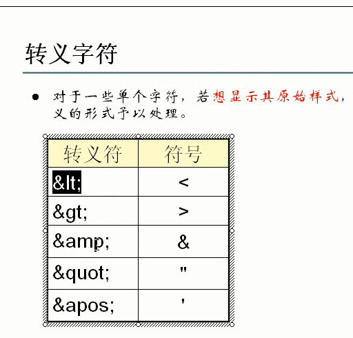
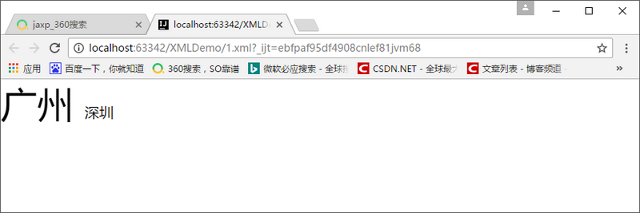
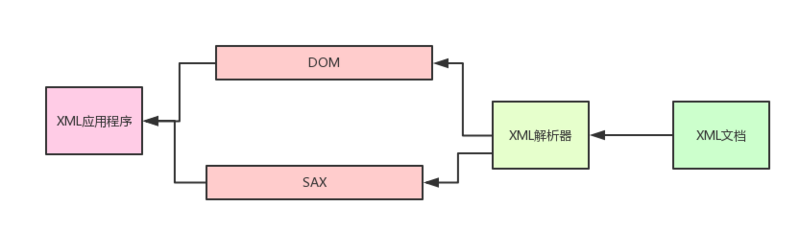

XML:extensiable markup language 被称作可扩展标记语言
XML简单的历史介绍：

②HTML语言本身就有缺陷：
XML文件就解决了以上的问题了，如果使用XML描述上述图片的关系，是非常简单的！
<?xml version="1.0" encoding="UTF-8" ?>
<中国>
<北京>
<海淀></海淀>
<丰台></丰台>
</北京>
<湖南>
<长沙></长沙>
<岳阳></岳阳>
</湖南>
<湖北>
<武汉></武汉>
<荆州></荆州>
</湖北>
</中国>
XML文件还能使用浏览器打开：

我们可以发现XML是可以描述很复杂的数据关系的
①：配置文件(例子：Tomcat的web.xml,server.xml......)，XML能够非常清晰描述出程序之间的关系
②：程序间数据的传输，XML的格式是通用的，能够减少交换数据时的复杂性！
③：充当小型数据库，如果我们的数据有时候需要人工配置的，那么XML充当小型的数据库是个不错的选择，程序直接读取XML文件显然要比读取数据库要快呢！
XML被设计为“什么都不做”，XML数据或XML文档只用于组织、存储数据，除此之外的数据生成、读取、传送、存取等等操作都与XML本身无关！
于是乎，想要操作XML，就需要用到XML之外的技术了：
<?xml version="1.0" encoding="utf-8" standalone="no"?>
首先在这里说明一个概念：在XML中元素和标签指的是同一个东西！不要被不同的名称所迷惑了！
元素中需要值得注意的地方：
看起来好像有很多需要值得注意的地方，其实只需要记住：XML的语法是规范的！不要随意乱写！
属性是作为XML元素中的一部分的，命名规范也是和XML元素一样的！
<!--属性名是name，属性值是china-->
<中国 name="china">
</中国>
注释和HTML的注释是一样的
<!---->
在编写XML文件时，有些内容可能不想让解析引擎解析执行，而是当作原始内容处理。遇到此种情况，可以把这些内容放在CDATA区里，对于CDATA区域内的内容，XML解析程序不会处理，而是直接原封不动的输出
语法：
<![CDATA[
...内容
]]>
对于一些单个字符，若想显示其原始样式，也可以使用转义的形式予以处理。

处理指令，简称PI （processing instruction）。处理指令用来指挥解析引擎如何解析XML文档内容。
例如：
在XML文档中可以使用xml-stylesheet指令，通知XML解析引擎，应用css文件显示xml文档内容。
<?xml-stylesheet type="text/css" href="1.css"?>
<?xml version="1.0" encoding="UTF-8" ?>
<?xml-stylesheet type="text/css" href="1.css"?>
<china>
<guangzhou>
广州
</guangzhou>
<shenzhen>
深圳
</shenzhen>
</china>
guangzhou{
font-size: 40px;
}

①：JAXP（The Java API For XML Processing)：主要负责解析XML
②：JAXB（Java Architecture for XML Binding):主要负责将XML映射为Java对象
前面XML章节已经说了，XML被设计为“什么都不做”，XML只用于组织、存储数据，除此之外的数据生成、读取、传送等等的操作都与XML本身无关！
XML解析就是读取XML的数据！
XML解析方式分为两种：
①：dom(Document Object Model)文档对象模型，是W3C组织推荐解析XML的一种方式
②：sax(Simple API For XML)，它是XML社区的标准，几乎所有XML解析器都支持它！

从上面的图很容易发现，应用程序不是直接对XML文档进行操作的，而是由XML解析器对XML文档进行分析，然后应用程序通过XML解析器所提供的DOM接口或者SAX接口对分析结果进行操作，从而间接地实现了对XML文档的访问！
常用的解析器和解析开发包的关系如下所示：
虽然jaxp解析XML的性能以及开发的简易度是没有dom4j好，但是jaxp不管怎么说都是JDK内置的开发包，我们是需要学习的！
DOM解析是一个基于对象的API，它把XML的内容加载到内存中，生成与XML文档内容对应的模型！当解析完成，内存中会生成与XML文档的结构与之对应的DOM对象树，这样就能够根据树的结构，以节点的形式对文档进行操作！
简单来说：DOM解析会把XML文档加载到内存中，生成DOM树的元素都是以对象的形式存在的！我们操作这些对象就能够操作XML文档了！
既然XML文档的数据是带有关系型的，那么生成的DOM树的节点也是有关系的：
在DOM解析中有几个核心的操作接口：
节点之间的关系图：
好的，不跟你们多bb，我们来使用一下Dom的方式解析XML文档吧！
<?xml version="1.0" encoding="UTF-8" ?>
<china>
<guangzhou >广州</guangzhou>
<shenzhen>深圳</shenzhen>
<beijing>北京</beijing>
<shanghai>上海</shanghai>
</china>
public class DomParse {
public static void main(String[] args) throws ParserConfigurationException, IOException, SAXException {
//API规范：需要用一个工厂来造解析器对象，于是我先造了一个工厂！
DocumentBuilderFactory documentBuilderFactory = DocumentBuilderFactory.newInstance();
//获取解析器对象
DocumentBuilder documentBuilder = documentBuilderFactory.newDocumentBuilder();
//获取到解析XML文档的流对象
InputStream inputStream = DomParse.class.getClassLoader().getResourceAsStream("city.xml");
//解析XML文档，得到了代表XML文档的Document对象！
Document document = documentBuilder.parse(inputStream);
}
}
可能我们会有两种想法：
public class DomParse {
public static void main(String[] args) throws ParserConfigurationException, IOException, SAXException {
//API规范：需要用一个工厂来造解析器对象，于是我先造了一个工厂！
DocumentBuilderFactory documentBuilderFactory = DocumentBuilderFactory.newInstance();
//获取解析器对象
DocumentBuilder documentBuilder = documentBuilderFactory.newDocumentBuilder();
//获取到解析XML文档的File对象
InputStream inputStream = DomParse.class.getClassLoader().getResourceAsStream("city.xml");
//解析XML文档，得到了代表XML文档的Document对象！
Document document = documentBuilder.parse(inputStream);
//把代表XML文档的document对象传递进去给list方法
list(document);
}
//我们这里就接收Node类型的实例对象吧！多态！！！
private static void list(Node node) {
//判断是否是元素节点，如果是元素节点就直接输出
if (node.getNodeType() == Node.ELEMENT_NODE) {
System.out.println(node.getNodeName());
}
//....如果没有进入if语句，下面的肯定就不是元素节点了，所以获取到子节点集合
NodeList nodeList = node.getChildNodes();
//遍历子节点集合
for (int i = 0; i < nodeList.getLength(); i++) {
//获取到其中的一个子节点
Node child = nodeList.item(i);
//...判断该子节点是否为元素节点，如果是元素节点就输出，不是元素节点就再获取到它的子节点集合...递归了
list(child);
}
}
}
现在我要做的就是：读取guangzhou这个节点的文本内容！
private static void read(Document document) {
//获取到所有名称为guangzhou节点
NodeList nodeList = document.getElementsByTagName("guangzhou");
//取出第一个名称为guangzhou的节点
Node node = nodeList.item(0);
//获取到节点的文本内容
String value = node.getTextContent();
System.out.println(value);
}
现在我想多增加一个城市节点(杭州)，我需要这样做：
private static void add(Document document) {
//创建需要增加的节点
Element element = document.createElement("hangzhou");
//向节点添加文本内容
element.setTextContent("杭州");
//得到需要添加节点的父节点
Node parent = document.getElementsByTagName("china").item(0);
//把需要增加的节点挂在父节点下面去
parent.appendChild(element);
}
//获取一个转换器它需要工厂来造，那么我就造一个工厂
TransformerFactory transformerFactory = TransformerFactory.newInstance();
//获取转换器对象
Transformer transformer = transformerFactory.newTransformer();
private static void add(Document document) throws TransformerException {
//创建需要增加的节点
Element element = document.createElement("hangzhou");
//向节点添加文本内容
element.setTextContent("杭州");
//得到需要添加节点的父节点
Node parent = document.getElementsByTagName("china").item(0);
//把需要增加的节点挂在父节点下面去
parent.appendChild(element);
//获取一个转换器它需要工厂来造，那么我就造一个工厂
TransformerFactory transformerFactory = TransformerFactory.newInstance();
//获取转换器对象
Transformer transformer = transformerFactory.newTransformer();
//把内存中的Dom树更新到硬盘中
transformer.transform(new DOMSource(document),new StreamResult("city.xml"));
}
刚刚增加的节点是在china节点的末尾处的，现在我想指定增加节点的在beijing节点之前，是这样做的：
private static void add2(Document document) throws TransformerException {
//获取到beijing节点
Node beijing = document.getElementsByTagName("beijing").item(0);
//创建新的节点
Element element = document.createElement("guangxi");
//设置节点的文本内容
element.setTextContent("广西");
//获取到要创建节点的父节点，
Node parent = document.getElementsByTagName("china").item(0);
//将guangxi节点插入到beijing节点之前！
parent.insertBefore(element, beijing);
//将内存中的Dom树更新到硬盘文件中
TransformerFactory transformerFactory = TransformerFactory.newInstance();
Transformer transformer = transformerFactory.newTransformer();
transformer.transform(new DOMSource(document), new StreamResult("city.xml"));
}
现在我要删除的是beijing这个节点！
private static void delete(Document document) throws TransformerException {
//获取到beijing这个节点
Node node = document.getElementsByTagName("beijing").item(0);
//获取到父节点，然后通过父节点把自己删除了
node.getParentNode().removeChild(node);
//把内存中的Dom树更新到硬盘文件中
TransformerFactory transformerFactory = TransformerFactory.newInstance();
Transformer transformer = transformerFactory.newTransformer();
transformer.transform(new DOMSource(document), new StreamResult("city.xml"));
}
将guangzhou节点的文本内容修改成广州你好
private static void update(Document document) throws TransformerException {
//获取到guangzhou节点
Node node = document.getElementsByTagName("guangzhou").item(0);
node.setTextContent("广州你好");
//将内存中的Dom树更新到硬盘文件中
TransformerFactory transformerFactory = TransformerFactory.newInstance();
Transformer transformer = transformerFactory.newTransformer();
transformer.transform(new DOMSource(document), new StreamResult("city.xml"));
}
XML文档是可能带有属性值的，现在我们要guangzhou节点上的属性
private static void updateAttribute(Document document) throws TransformerException {
//获取到guangzhou节点
Node node = document.getElementsByTagName("guangzhou").item(0);
//现在node节点没有增加属性的方法，所以我就要找它的子类---Element
Element guangzhou = (Element) node;
//设置一个属性，如果存在则修改，不存在则创建！
guangzhou.setAttribute("play", "gzchanglong");
//如果要删除属性就用removeAttribute()方法
//将内存中的Dom树更新到硬盘文件中
TransformerFactory transformerFactory = TransformerFactory.newInstance();
Transformer transformer = transformerFactory.newTransformer();
transformer.transform(new DOMSource(document), new StreamResult("city.xml"));
}
SAX采用的是一种顺序的模式进行访问，是一种快速读取XML数据的方式。当时候SAX解析器进行操作时，会触发一系列事件SAX。采用事件处理的方式解析XML文件，利用 SAX 解析 XML 文档，涉及两个部分：解析器和事件处理器
sax是一种推式的机制,你创建一个sax 解析器,解析器在发现xml文档中的内容时就告诉你(把事件推给你). 如何处理这些内容，由程序员自己决定。
当解析器解析到<?xml version="1.0" encoding="UTF-8" standalone="no"?>声明头时，会触发事件。解析到<china>元素头时也会触发事件！也就是说：当使用SAX解析器扫描XML文档(也就是Document对象)开始、结束，以及元素的开始、结束时都会触发事件，根据不同事件调用相对应的方法!
首先我们还是先拿到SAX的解析器再说吧!
//要得到解析器对象就需要造一个工厂，于是我造了一个工厂
SAXParserFactory saxParserFactory = SAXParserFactory.newInstance();
//获取到解析器对象
SAXParser saxParse = saxParserFactory.newSAXParser();
@Override
public void startDocument() throws SAXException {
super.startDocument();
}
@Override
public void endDocument() throws SAXException {
super.endDocument();
}
@Override
public void startElement(String uri, String localName, String qName, Attributes attributes) throws SAXException {
super.startElement(uri, localName, qName, attributes);
}
@Override
public void endElement(String uri, String localName, String qName) throws SAXException {
super.endElement(uri, localName, qName);
}
@Override
public void characters(char[] ch, int start, int length) throws SAXException {
super.characters(ch, start, length);
}
public static void main(String[] args) throws Exception{
//要得到解析器对象就需要造一个工厂，于是我造了一个工厂
SAXParserFactory saxParserFactory = SAXParserFactory.newInstance();
//获取到解析器对象
SAXParser saxParse = saxParserFactory.newSAXParser();
//获取到XML文档的流对象
InputStream inputStream = SAXParse.class.getClassLoader().getResourceAsStream("city.xml");
saxParse.parse(inputStream, new MyHandler());
}
public class MyHandler extends DefaultHandler {
@Override
public void startDocument() throws SAXException {
System.out.println("我开始来扫描啦！！！！");
}
@Override
public void endDocument() throws SAXException {
System.out.println("我结束了！！！！");
}
@Override
public void startElement(String uri, String localName, String qName, Attributes attributes) throws SAXException {
//如果要解析出节点属性的内容，也非常简单，只要通过attributes变量就行了！
//输出节点的名字！
System.out.println(qName);
}
@Override
public void endElement(String uri, String localName, String qName) throws SAXException {
System.out.println(qName);
}
@Override
public void characters(char[] ch, int start, int length) throws SAXException {
System.out.println(new String(ch,start,length));
}
}
//定义一个标识量，用于指定查询某个节点的内容
boolean flag = false;
@Override
public void startElement(String uri, String localName, String qName, Attributes attributes) throws SAXException {
//如果节点名称是guangzhou，我才输出，并且把标识量设置为true
if (qName == "guangzhou") {
System.out.println(qName);
flag = true;
}
}
@Override
public void characters(char[] ch, int start, int length) throws SAXException {
//只有在flag为true的情况下我才输出文本的内容
if (flag == true) {
System.out.println(new String(ch, start, length));
}
}
@Override
public void endElement(String uri, String localName, String qName) throws SAXException {
//在执行到元素的末尾时，不要忘了将标识量改成false
if (qName == "guangzhou" && flag == true) {
System.out.println(qName);
flag = false;
}
}
DOM解析读取整个XML文档，在内存中形成DOM树，很方便地对XML文档的内容进行增删改。但如果XML文档的内容过大，那么就会导致内存溢出！
SAX解析采用部分读取的方式，可以处理大型文件，但只能对文件按顺序从头到尾解析一遍，不支持文件的增删改操作
DOM和SAX解析有着明显的差别，什么时候使用DOM或者SAX就非常明了了。
Dom4j是一个非常优秀的Java XML API，具有性能优异、功能强大和极易使用的特点。
因为dom4j不是sun公司的产品,所以我们开发dom4j需要导入开发包
//获取到解析器
SAXReader saxReader = new SAXReader();
//获取到XML文件的流对象
InputStream inputStream = DOM4j.class.getClassLoader().getResourceAsStream("1.xml");
//通过解析器读取XML文件
Document document = saxReader.read(inputStream);
我们都知道，Document代表的是XML文档，一般我们都是通过Document对象开始，来进行CRUD（增删改查）操作的！
获取Document对象有三种方式：
①：读取XML文件,获得document对象（这种最常用）
SAXReader reader = new SAXReader()；
Document document = reader.read(new File("input.xml"));
②：解析XML形式的文本,得到document对象
String text = "<members></members>";
Document document=DocumentHelper.parseText(text);
③：主动创建document对象.
Document document =DocumentHelper.createDocument();
//创建根节点
Element root = document.addElement("members");读取XML文档的数据，都是通过Document获取根元素，再通过根元素获取得到其他节点的，从而进行操作！
如果XML的结构有多层，需要一层一层地获取！
@Test
public void read() throws DocumentException {
//获取到解析器
SAXReader saxReader = new SAXReader();
//获取到XML文件的流对象
InputStream inputStream = dom4j11.class.getClassLoader().getResourceAsStream("1.xml");
//通过解析器读取XML文件
Document document = saxReader.read(inputStream);
//获取得到根节点
Element root = document.getRootElement();
//获取得到name节点
Element name = root.element("name");
//得到了name节点，就可以获取name节点的属性或者文本内容了！
String text = name.getText();
String attribute = name.attributeValue("littleName");
System.out.println("文本内容是：" + text);
System.out.println("属性内容是：" + attribute);
}
<?xml version="1.0" encoding="UTF-8" ?>
<person>
<name littleName="fucheng">zhongfucheng</name>
<age>20</age>
</person>
//获取得到根节点
Element root = document.getRootElement();
//一层一层地获取到节点
Element element = root.element("guangdong").element("guangzhou").element("luogang");
String value = element.getText();
System.out.println(value);
在DOM4j中要对内存中的DOM树写到硬盘文件中，也是要有转换器的支持的！
dom4j提供了XMLWriter供我们对XML文档进行更新操作，一般地创建XMLWriter的时候我们都会给出两个参数，一个是Writer，一个是OutputFormat
这个OutputFormat有什么用的呢？其实就是指定回写XML的格式和编码格式。细心的朋友会发现，上面我们在jaxp包下使用dom解析的Transformer类，把内存中的DOM树更新到文件硬盘中，是没有格式的！不信倒回去看看！这个OutputFormat就可以让我们更新XML文档时也能带有格式！
//创建带有格式的对象
OutputFormat outputFormat = OutputFormat.createPrettyPrint();
//设置编码，默认的编码是gb2312，读写的编码不一致，会导致乱码的！
outputFormat.setEncoding("UTF-8");
//创建XMLWriter对象
XMLWriter xmlWriter = new XMLWriter(new FileWriter("2.xml"), outputFormat);
//XMLWriter对象写入的是document
xmlWriter.write(document);
//关闭流
xmlWriter.close();
@Test
public void add() throws Exception {
//获取到解析器
SAXReader saxReader = new SAXReader();
//获取到XML文件的流对象
InputStream inputStream = dom4j11.class.getClassLoader().getResourceAsStream("1.xml");
//通过解析器读取XML文件
Document document = saxReader.read(inputStream);
//创建出新的节点，为节点设置文本内容
Element newElement = DocumentHelper.createElement("name");
newElement.setText("ouzicheng");
//获取到根元素
Element root = document.getRootElement();
//把新创建的name节点挂在根节点下面
root.add(newElement);
//创建带有格式的对象
OutputFormat outputFormat = OutputFormat.createPrettyPrint();
//设置编码，默认的编码是gb2312，读写的编码不一致，会导致乱码的！
outputFormat.setEncoding("UTF-8");
//创建XMLWriter对象
XMLWriter xmlWriter = new XMLWriter(new FileWriter("2.xml"), outputFormat);
//XMLWriter对象写入的是document
xmlWriter.write(document);
//关闭流
xmlWriter.close();
}
在指定的位置增加节点！现在我想的就是在age属性前面添加节点！
//创建一个新节点
Element element = DocumentHelper.createElement("name");
element.setText("ouzciheng");
//获取得到person下所有的节点元素！
List list = document.getRootElement().elements();
//将节点添加到指定的位置上
list.add(1, element);
//获取得到age元素
Element age = document.getRootElement().element("age");
age.setText("9999");
//获取得到age节点
Element age = document.getRootElement().element("age");
//得到age节点的父节点，使用父节点的remove删除age节点！
age.getParent().remove(age);
XPath 是一门在 XML 文档中查找信息的语言。XPath 用于在 XML 文档中通过元素和属性进行导航。
上面我们使用dom4j的时候，要获取某个节点，都是通过根节点开始，一层一层地往下寻找，这就有些麻烦了！
如果我们用到了XPATH这门语言，要获取得到XML的节点，就非常地方便了！
使用XPATH需要导入开发包jaxen-1.1-beta-7，我们来看官方的文档来入门吧。
//直接获取到luogang节点
org.dom4j.Node node = document.selectSingleNode("//luogang");
//获取节点的内容
String value = node.getText();
System.out.println(value);
获取什么类型的节点，XPATH的字符串应该怎么匹配，查文档就知道了，这里就不再赘述了。！
如果文章有错的地方欢迎指正，大家互相交流。习惯在微信看技术文章的同学，可以关注微信公众号:Java3y
{kind=link}